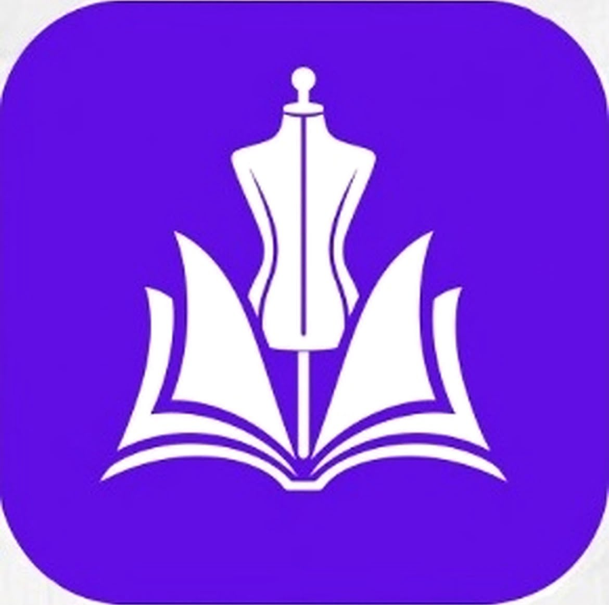
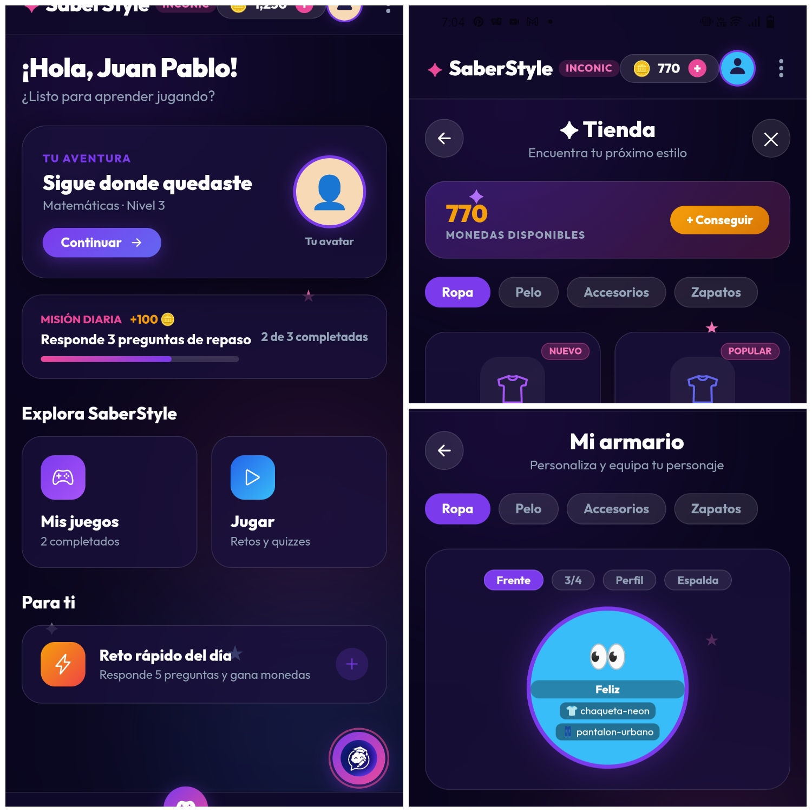

Somos una empresa de tecnología educativa dedicada al desarrollo de experiencias de aprendizaje interactivas, accesibles e inclusivas.
Nuestra historia empezó cuando buscábamos una idea innovadora para nuestro proyecto de Sena, cuando nuestra fundadora Gabriela Ferrer dio la idea de hacer una aplicación educativa de juegos interactivos pero aún más inclusiva y diversa.
En nuestros valores se encuentra la solidaridad, el respeto, la innovación, la accesibilidad. Pero sobre todo nos destacamos sobre todo por la empatia, entendemos que las personas con cualquier tipo de discapacidad tienen un camino más difícil el cual recorrer, por eso decidimos ser parte de ese camino para ayudarlos y fortalecerlos en algo tan importante como lo es la educación.
Nuestra misión es brindar una herramienta divertida, creativa, útil, educativa y accesible. Buscamos apoyar a los estudiantes de inclusión mediante recursos como sonidos, colores y sensaciones. Así favoreciendo su aprendizaje y participación en el entorno escolar.
Nuestra visión es ser una empresa reconocida a nivel Latinoamérica por innovar en los juegos educativos por nuestras implementaciones de inclusión, ofreciendo herramientas que apoyen a todo tipo de estudiantes.
Ofrecemos servicios orientados a complementar la experiencia de SaberStyle, proporcionando soluciones educativas, tecnológicas e inclusivas para instituciones y docentes. Diseñamos y personalizamos actividades educativas como quizzes, juegos y retos de acuerdo con diferentes objetivos de aprendizaje, además de adaptar contenidos y recursos para facilitar la participación de estudiantes con distintas necesidades. También ofrecemos herramientas de seguimiento para consultar resultados y avances, acompañamiento para implementar la plataforma en instituciones educativas, soporte técnico y mantenimiento continuo, así como asesoría en el uso de estrategias de gamificación para crear experiencias de aprendizaje más dinámicas, accesibles y entretenidas.
SaberStyle es una aplicación educativa e inclusiva que combina el aprendizaje con la moda para convertir la educación en una experiencia divertida, interactiva y personalizada.
A través de quizzes, juegos y retos, los estudiantes pueden poner a prueba sus conocimientos, ganar puntos, desbloquear recompensas y crear su propio avatar, eligiendo diferentes elementos de vestuario y estilo mientras avanzan en su aprendizaje.
La plataforma está diseñada para adaptarse a diferentes formas de aprendizaje, incorporando recursos visuales, sonidos y herramientas de accesibilidad que buscan facilitar la participación de todos los estudiantes.


Inconic es una empresa de tecnología educativa dedicada al desarrollo de soluciones digitales interactivas, accesibles e inclusivas. Nos enfocamos en crear aplicaciones y herramientas tecnológicas que contribuyan a mejorar las experiencias de aprendizaje.
Inconic es una empresa de tecnología educativa dedicada al desarrollo de soluciones digitales interactivas, accesibles e inclusivas. Nos enfocamos en crear aplicaciones y herramientas tecnológicas que contribuyan a mejorar las experiencias de aprendizaje.
SaberStyle es una aplicación educativa desarrollada por Inconic que combina el aprendizaje con la moda y la personalización de avatares. A través de quizzes, juegos y retos, los estudiantes pueden fortalecer sus conocimientos, ganar puntos y desbloquear recompensas mientras aprenden de manera divertida.
Actualmente, SaberStyle se encuentra en proceso de desarrollo. Estamos trabajando en sus funcionalidades, diseño y herramientas de accesibilidad para ofrecer una experiencia educativa interactiva y adaptada a diferentes necesidades.
SaberStyle está pensado para apoyar los procesos de enseñanza y aprendizaje en entornos educativos. Buscamos ofrecer herramientas que permitan a docentes e instituciones complementar sus actividades académicas mediante experiencias interactivas.
¡Sí! Uno de los enfoques principales de SaberStyle es la inclusión. La plataforma contempla herramientas de accesibilidad, como ajustes visuales, opciones de adaptación de colores y recursos que buscan facilitar la experiencia de estudiantes con diferentes necesidades.